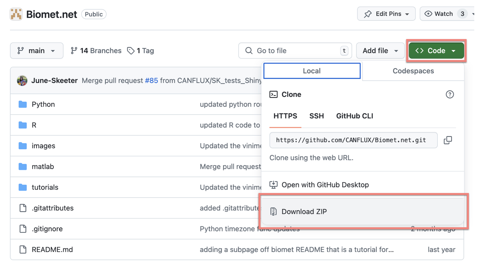

2.2. Download or clone the Biomet.net library Git repository to your local computer
The Biomet.net repository contains libraries of computer code (in Matlab, R, and Python) related to running the data cleaning pipeline. It contains (a) the scripts to run the first, second, and third cleaning stages, as well as conversion to AmeriFlux format, and (b) many functions to help analyse and visualize data throughout all the stages of data processing and cleaning.
In principle, users should not need to edit this code library. Instead, as far as possible, you will interface with it using various configuration files unique to your own project(s) and site(s). This process is described later.
First, you need to either download or clone the repository. Instructions for both are given below; if you do not have Git installed on your computer and do not anticipate adding any of your own code to the Biomet.net library, then you can download the repository, as follows:
Instructions to download the Biomet.net repository:
Go to the Biomet.net library webpage.
Click on the green “Code” button, and then click “Download ZIP”:

Screenshot of Biomet.net repository on Github, showing how to download.
Move the downloaded
Biomet.net-main.zipfile to a convenient location on your computer, e.g., within yourC:drive for PCs, or within/Users/<username>/for Macs.Importantly, after unzipping the file, rename the unzipped directory from
Biomet.net-maintoBiomet.net.We recommend repeating these steps periodically so that you remain up to date with our pipeline developments, keeping only the most recently downloaded Biomet.net folder on your computer. It should always be in the same location so that Matlab knows where to look for the library (see section 2.4 for details).
Alternatively, if you prefer to clone the directory, you will need to have Git installed on your computer (section 2.1), then you can follow these instructions:
Instructions to clone the Biomet.net repository from a terminal:
Make sure you are in the directory (folder) where you wish the repository to live, for example, your computer
C:drive for PCs, or/Users/<username>/for Macs, or something similar depending on your preferences.Next, follow the instructions on this website to clone the repository.
If you have any difficulties or are unsure of
gitprocedures in general, see this online tutorial.Always keep your local copy of the
Biomet.netcode up to date by periodically using thegit pullcommand every few days, or when you know there has been a change to the code. You must be in the repository directory for this to work.
NOTE: Editing existing files or saving new ones to the main branch of Biomet.net should generally be avoided. Reminder: if you wish to contribute your own code to the Biomet.net library, see section 2.1.